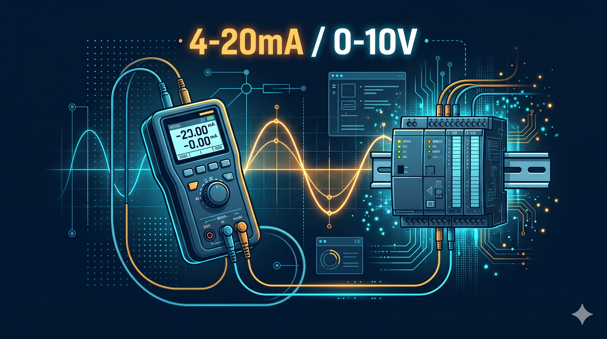
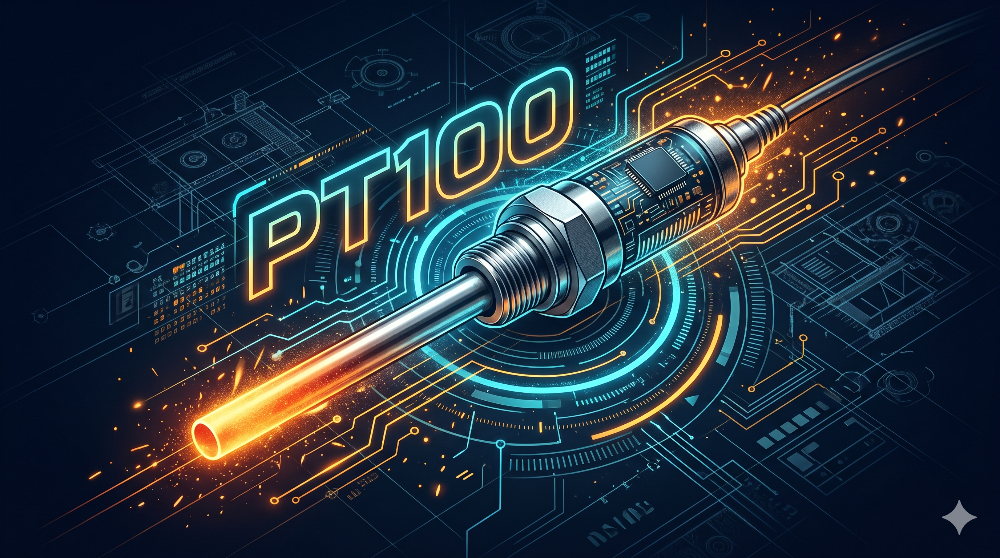
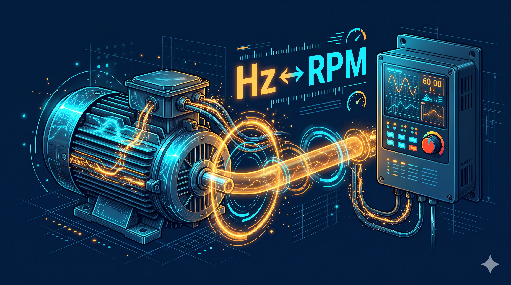

⚡ VoltSinal
Automação, Instrumentação e Controle
OFFLINE
4-20mA / 0-10V
PT100 / PT1000
Inversor Hz↔RPM

Configuração do Transmissor / Sensor
Tipo de Sinal
4 a 20 mA
0 a 10 V
0 a 20 mA
1 a 5 V
2 a 10 V
Unidade
bar
°C
%
m³/h
PSI
mmH2O
metros
RPM
Início da Faixa (LRV - 0%)
Fim da Faixa (URV - 100%)
Conversão em Tempo Real
Leitura do Multímetro (mA)
Valor do Processo (bar)
Percentual
50.0%
CLP Siemens (0-27648)
13824
CLP 12-bit (0-4095)
2048
CLP 15-bit (0-32767)
16384
💬 Enviar Leitura no WhatsApp
Tabela de Calibração (5 Pontos)
%
Sinal (mA)
Processo (bar)
Siemens

Conversor RTD (Norma IEC 60751)
Tipo do Sensor
PT100 (100 Ω a 0°C)
PT1000 (1000 Ω a 0°C)
Resistência Medida (Ω)
Temperatura (°C)
Temperatura (°C)
25.0 °C
Fahrenheit (°F)
77.0 °F
💬 Enviar Leitura no WhatsApp
Tabela Rápida de Bancada
Temperatura
PT100 (Ω)
PT1000 (Ω)

Dados do Motor / Inversor
Nº de Polos
2 Polos (3600 RPM)
4 Polos (1800 RPM)
6 Polos (1200 RPM)
8 Polos (900 RPM)
Freq. Nominal (Hz)
60 Hz (Brasil)
50 Hz
Escorregamento (%)
Conversão Frequência ↔ Rotação
Frequência no Inversor (Hz)
Rotação Real Desejada (RPM)
RPM Real (c/ Escorreg.)
1316 RPM
RPM Síncrona
1350 RPM
Ref. Analógica (4-20mA)
16.00 mA
Ref. Analógica (0-10V)
7.50 V
💬 Enviar Cálculo no WhatsApp